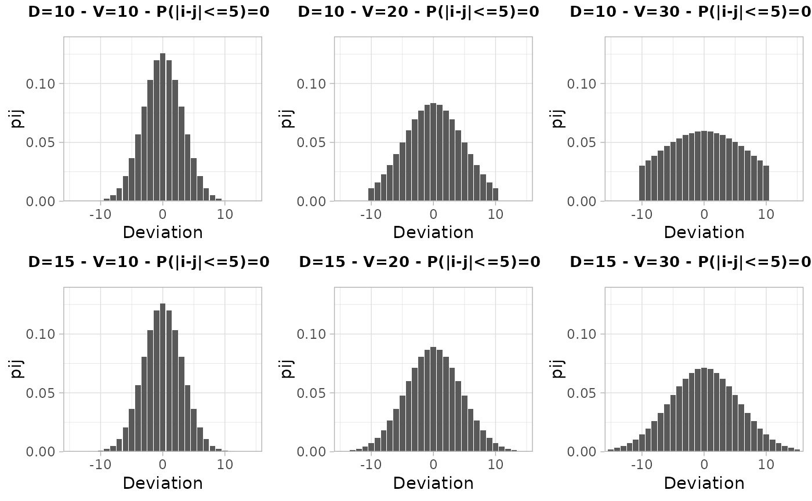

Applying the Cell Key Method with the `ckm` package
2026-02-03
Source:vignettes/using-ckm-package.Rmd
using-ckm-package.RmdIntroduction
This vignette demonstrates how to use the key functions of the package to apply the Cell Key Method for statistical disclosure control. The steps include:
- Adding keys to microdata using
build_individual_keys. - Comparing different transition matrices with
visualiser_distributionfor various parameter choices. - Simulating risk and utility measures with
simulate_RUs. - Applying the Cell Key Method with
tabulate_and_apply_ckmand interpreting the results.
Step 1: Adding Keys to Microdata
First, load the package and example data, then generate individual keys.
##
## Attaching package: 'dplyr'## The following objects are masked from 'package:stats':
##
## filter, lag## The following objects are masked from 'package:base':
##
## intersect, setdiff, setequal, union
library(ckm)
# Load example microdata
data("dtest", package = "ckm")
# Set a seed for reproducibility
set.seed(4081789)
# Add individual keys to the microdata
dtest_with_keys <- build_individual_keys(dtest)
head(dtest_with_keys)## SEXE DIPLOME AGE DEP REG TYPE TYPE2 VAL WEIGHT
## <char> <char> <char> <char> <char> <char> <char> <num> <num>
## 1: G D [26,50) 77 11 T TU 9442.606 1.7778327
## 2: F N [50,120] 10 44 X VWX 10297.082 1.3046769
## 3: F D [0,26) 44 52 T TU 9770.001 0.5867569
## 4: F N [26,50) 83 93 T TU 10444.552 1.0662507
## 5: G D [50,120] 59 32 T TU 10586.279 1.1571308
## 6: F N [26,50) 59 32 T TU 10330.752 1.4899395
## rkey
## <num>
## 1: 0.6934088
## 2: 0.9771298
## 3: 0.2773011
## 4: 0.3990830
## 5: 0.4361497
## 6: 0.6486956Step 2: Comparing Transition Matrices
Step 2.1: Search Feasible Transition Matrices
test_matrices(D = 10, js = 4)## Tested interval: [ 0 ; 30 ]
## Tested interval: [ 0 ; 15 ]
## Tested interval: [ 0 ; 7.5 ]
## Tested interval: [ 3.75 ; 7.5 ]
## Tested interval: [ 5.625 ; 7.5 ]
## Tested interval: [ 5.625 ; 6.5625 ]## [1] 6.5625
test_matrices(D = 15, js = 4)## Tested interval: [ 0 ; 30 ]
## Tested interval: [ 0 ; 15 ]
## Tested interval: [ 0 ; 7.5 ]
## Tested interval: [ 3.75 ; 7.5 ]
## Tested interval: [ 5.625 ; 7.5 ]
## Tested interval: [ 5.625 ; 6.5625 ]## [1] 6.5625With D equals to 10 or 15 and js equals to 4, the minimal variance
that let us build a transition matrix isV=6.5625.
Step 2.2: Visualize the distributions
We compare the transition matrices for different values of D and V
using visualiser_distribution.
# Visualize transition matrices for different parameter sets
visualize_distribution(D = c(10, 15), V = c(10, 20, 30))
With V<=20, the distributions ensures that more than
75% of the absolute deviations are equal to 5 at most.
Step 3: Estimating Risk and Simulating Utility Measures
We use simulate_RUs to compare the risk and utility for
the different parameter sets. We set n_sim = 5 for a quick
demonstration and use the categorical variables REG, DIPLOME, AGE, and
SEXE.
# Define the categorical variables
cat_vars <- c("REG", "DIPLOME", "AGE", "SEXE")
# Define the parameters D and V (and js if needed) to test:
parameters <- build_parameters_table(Ds = c(10,15), Vs = c(10, 20), jss = 4)
# Simulate risk and utility for different parameter sets
sim_results <- simulate_RUs(
df = dtest,
cat_vars = cat_vars,
parametres = parameters,
confident = 5,
n_sim = 5
)## ■■■■■■■■■ 25% | ETA: 10s## ■■■■■■■■■■■■■■■■ 50% | ETA: 9s## ■■■■■■■■■■■■■■■■■■■■■■■ 75% | ETA: 5s
# Display the results
sim_results |>
group_by(D, V, js, i, j, risk_inference = qij) |>
summarise(MAD = mean(MAD), .groups = "drop")## # A tibble: 4 × 7
## D V js i j risk_inference MAD
## <dbl> <dbl> <dbl> <chr> <chr> <dbl> <dbl>
## 1 10 10 4 1, 2, 3, 4 5 0.487 2.51
## 2 10 20 4 1, 2, 3, 4 5 0.370 3.44
## 3 15 10 4 1, 2, 3, 4 5 0.489 2.51
## 4 15 20 4 1, 2, 3, 4 5 0.360 3.41As the risk inference of sensitive values is lower than
50% for all sets of parameters, one can choose the one that
maximize the utility (D=15, V=10).
Step 4: Applying the Cell Key Method
Based on the previous results, we select one set of parameters (D =
15, V = 10) and apply the Cell Key Method using
tabulate_and_apply_ckm.
# Apply the Cell Key Method with chosen parameters
res_ckm <- tabulate_and_apply_ckm(
df = dtest_with_keys,
cat_vars = cat_vars,
D = 15,
V = 10,
js = 4
)
# Examine the perturbed table
head(res_ckm$tab |> filter(DIPLOME == "D") |> arrange(REG, AGE, SEXE), n = 12)## # A tibble: 12 × 6
## REG DIPLOME AGE SEXE nb_obs nb_obs_ckm
## <chr> <chr> <chr> <chr> <int> <dbl>
## 1 1 D Total F 11 6
## 2 1 D Total G 18 19
## 3 1 D Total Total 29 30
## 4 1 D [0,26) F 1 0
## 5 1 D [0,26) G 1 7
## 6 1 D [0,26) Total 2 9
## 7 1 D [26,50) F 8 13
## 8 1 D [26,50) G 8 7
## 9 1 D [26,50) Total 16 14
## 10 1 D [50,120] F 2 0
## 11 1 D [50,120] G 9 7
## 12 1 D [50,120] Total 11 10